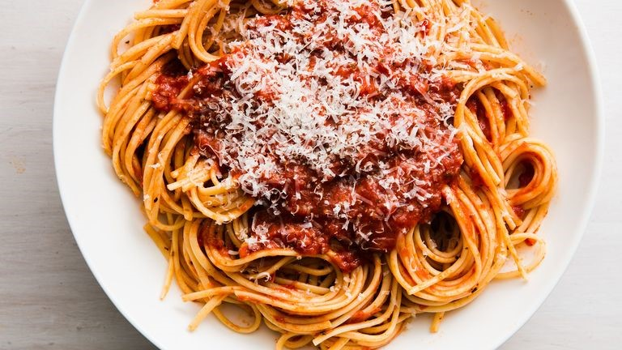

| Homepage | Spaghetti | Recipe Viewer |
|---|
Best Homemade Spaghetti by Erfan Darehshoori |
|
Ingredients
|
 |
Instructions
|
Nutrition Facts Per Serving: 185 calories; protein 12.4g; carbohydrates 15g; fat 9.3g; cholesterol 34.8mg; sodium 930.8mg. |
Members |
References |